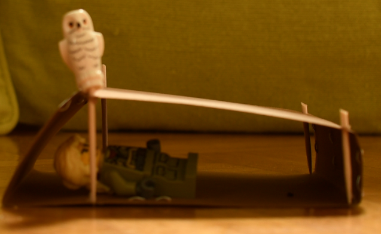

Grundsätzlich freue ich mich darauf endlich mals wieder in ein Cevi-Lager zu gehen.
Am lässigsten finde ich dabei immer die Zeltlager. Da es dieses Jahr sowieso kein Zeltlager gibt und aktuell eben gar keine Cevi. habe ich mir mein eigenes
Zeltlager aufgebaut.
Das ich noch nie in einem 8er-First geschlafen haben würde ich gerne mal einen solchen aufstellen und darin übernachten.

Mein 8er-Firstzelt
Scene aus einem Fantasie Harry-Potter-Cevi-Zeltlager :-)

Nahaufnahme meines 8er-Firstzelt
Gut mag ich mich ans grosse WS-Zeltlager errinnern. Dabei hat mir der grosse Sararni besonders gefallen.
Darum möchte ich auch mal wieder einen solchen aufbauen.. Oben sogar mit Fensterblachen.

Mein Sarasari

Eine neue Fensterblache
Allerdings wäre ich auch mit einem ganz einfachen Zelt zufrieden. Z.B. nach einem Hike einfach einen Gotthardschlauch aufstellen und müde reinliegen.

In einem Gotthartschlauch schlafen